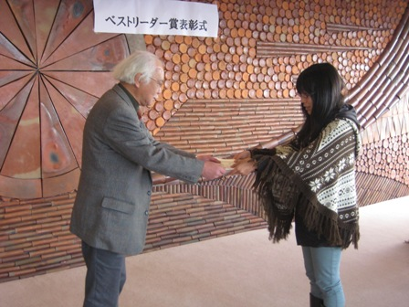
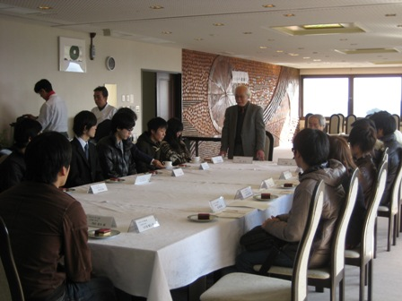

|
表彰式の様子
|
|

|
2011年度のベストリーダー賞表彰式を、平成24年1月13日（金）11:00〜、岡山理科大学11号館８階ラウンジにて開催しました。
当日は、欠席者4名を除く受賞者15名が参加し、関達也図書館長より、表彰状と副賞の図書カードが授与されました。
大賞では、理工系１位を動物学科の渡邊朝子さん、人文科学・社会科学の久山真宏君、文学の森本早斗志君が受賞しました。
渡邊さんは、３年前の新人賞、理工系部門の獲得者でした。 また、理工系３位の有芳君と文学１位の森本君も新人賞の獲得者でした。
新人賞獲得者が、大学生活で図書館を利用し、卒業年次に大賞を受賞することは、図書館にとってとても喜ばしいことであります。
|
表彰式後、ベストリーダー賞受賞者と、図書館職員との懇談会を行い、受賞の感想や図書館への要望などが談義されました。
|

|
| 大賞受賞者の感想 |
|
理工系1位
渡邊 朝子
|
Q 受賞しての感想
A 自分が借りた本の数を見て、これだけ借りたのだなと思うと同時にこれだけ図書館に足を運んだのだなと思いました。
Q 受賞の秘訣は？
秘訣は、タイトルと文章を少し読んでみて、おもしろそうだと思ったらとりあえず借りてみること。
|
|
人文・社会科学1位
久山 真宏
|
Q 受賞してのご感想は？
A 賞の受賞を聞いて、びっくりした。
Q 受賞の秘訣は？
A 秘訣は、本を買うと高いが、図書館ならタダ！！
|
|
文学1位
森本早斗志
|
Q 受賞してのご感想は？
A 受賞しているとは思いませんでした。とてもうれしいです。
Q 受賞の秘訣は？
A 秘訣は、物事を知りたいという気持ちが重要だと思います。
|
| 大賞受賞者の推薦本 |
|---|
| 署名 / 著者 [請求記号] | 推薦の理由 |
|---|
空は、今日も、青いか？ / 石田衣良 [914.6/Is] 10号館一般
|
石田衣良さんの数あるエッセー集の一つで、作家ならではの視点で紡がれる文はハッとさせられたり、優しく語りかける様な言葉に心が満たされます。
２０代の社会人向けですが、大学生にこそ読んで欲しい一冊です。 |
毛髪の科学 / クラーレンス・R・ロビンス [491.36/Ro] 11号館2F
|
毛髪に関しての全てがこの一冊に書かれています。毛髪について知りたい事があれば是非。 |
植物まるかじり叢書４進化し続ける植物たち / 葛西奈津子 [471.2/Ka] 11号館3F
|
植物の進化を研究している研究者を取材していて、研究の内容だけでなく、なぜその分野に興味を持ったのかについても紹介されていておもしろいです。 |
ハーバード白熱教室講義録 上・下 / Sandel, Michael J. [311.1/Sa/1,2] 21号館3F
|
「正義」とは何かについて、事件など様々な例を示しながら、学生とともに講義していて、白熱した講義の様子が伝わってきますし、本当の正義とは何か、考えさせられます。 |
| 学術情報流通とオープンアクセス / 倉田敬子 [409.5/Ku] 11号館3F
|
オープンアクセスについては、この先生が一番!!文学に興味があれば読むべき！ |
獣の奏者 / 上橋菜穂子 [913.6/Ue/1,2,3,4,5] 10号館一般
|
小学生〜大人まで、誰でも読みやすい!!そして面白く、世界に引き込まれて行く。 |
| 有機化学 / 奥山格監修 [437/Ok] 11号館3F
|
図表、webサイト等を使ってわかりやすく、サイズがコンパクトなので持ち運びやすい。教科書とは違う視点での説明もあって、比較して考えるのも良いと思う。 |
| 情報の歴史−象形文字から人工知能まで− / 松岡正剛 [203.2/Jo] 21号館
|
外国、日本間の歴史が対比されていて、社会・文化を含めた歴史の流れがわかる。古い本なので入手が難しい。 |
化学文献の調べ方 / 小川雅彌 [430.3/Ka] 11号館3F
|
調べたいことが的確に書いてあるのでタメになる。 |
悪の教典 / 貴志祐介 [913.6/Ka/1,2] 10号館一般
|
人間描写が深くまで描かれていて読むほどに引き込まれていく。 |
動物たちの反乱：増えすぎるシカ、人里へ出るクマ / 河合雅雄、林良博編著 [482.1/Ka] 11号館3F
|
今、日本各地で起きている野生動物と人間の問題を知ることができます。日本人がどう日本の動物とつきあっていくべきかを考えさせられました。
|
| 新人賞受賞者の感想 |
|
理工系1位
渡辺 裕也
|
Q 受賞してのご感想は？
A このような賞をいただけると聞いて、大変驚いています。まさか、自分が受賞できるとは思っていなかったので、とてもうれしいです。これを機にたくさんの本を読んで、自分の知識や人間性を深めていきたいです。
|
|
人文・社会科学1位
山下 将昭
|
Q 受賞してのご感想は？
A ベストリーダー賞について知らなかったのでびっくりした。これからも図書館を利用して勉強を頑張りたい。
|
| 新人賞受賞者の推薦本 |
|---|
| 署名 / 著者 [請求記号] | 推薦の理由 |
|---|
バイオテクノロジーと食糧生産 / 川井 一之 [460.7/Ka] 11号館3F
|
バイオテクノロジーについて初心者にもわかりやすい様に、図が多用されており、読みやすく理解しやすい。
バイオテクノロジについて、いろいろな国の視点・問題点が書かれていて読んでいてあきない。
|
| もやしもん / 石川雅之 [465/Is/1,2,3,4,5,6,7,8,9] 11号館3F |
マンガで読みやすい。軽く読むだけで日本の農業・お酒・発酵についての知識が深められる。 |
| 化合物の辞典 / 高本進 [ほか] [430.33/Ka] 11号館3F |
レポートの作成のときにとても役立った。 |
| 現場技術者のための発破工学ハンドブック / 火薬学会発破専門部会編 [575.9/Ka] 11号館2F |
資格勉強の助けになった。 |
| 空間演出 / 日本建築学会編 [520.4/Ni] 11号館2F |
世界の名所を分かりやすく説明が書いてあって読みやすい。 |
| 世界遺産101 / アフロ著 [709/Af] 21号館 |
地方ごとに世界遺産がわけられていて、写真がきれい。 |
| 向日葵の咲かない夏 / 道尾秀介 [908/Sh/M] 10号館文庫(2F) |
内容には好き嫌いがきっぱりと分かれると思いますが、個人的には一番面白いと思える作品。
本格ミステリーとして精巧に練られたストーリーで、読む人を引き込んでくれると思います。
ただ、全体的に歪んで暗くて残酷なので、慣れない人は読まない方がいいと思われます。
|
| リトル・チャロ1,2,3 / わかぎゑふ原作 ; 佐藤良明, 栩木玲子英語脚本 [837.7/Nh/L] 21号館特設コーナー |
NHK教育番組のストーリーが本になったものなので、英語でも分かりやすく、和訳文もあるので気楽に楽しむこともできます。
|
| フルメタル・パニック（シリーズ） / 賀東招二 [908/Fu/G] 10号館文庫(2F) |
大型ロボットの出るミリタリーと学園ものが合わさったもので、ギャグとシリアスのバランスが絶妙です。短編集もおもしろいです。
|
| 声の網 / 星新一 [908/Ka/H] 10号館文庫(2F) |
星新一氏の作品はどれもおもしろい話ばかりですが、ここではこれをお薦めします。
この作品は1970年に書かれたものですが、今読むと、とてもリアリティを感じることができます。まるで今の事が書かれているような気分を味わえます。
|
| 理科大学図書館の良さと利用した印象 |
・蔵書の量が多く、リラックスできる場所
・夜遅くまで開館しているし、３カ所もあり利用しやすい
・気楽に寄れて、楽しめる場所
・自分の知識を深める場所、ここちよい空間
・図書館が３つもあり移動がたいへんだけど、その分、一つの図書館にある専門書が充実していること
・講義やレポートなどに必要な資料を提供してくれる場所
・希望すれば、学生希望図書として月５冊の本を購入してもらうことができる。
・図書館の本から必要な情報を集めるコツを学ぶことができる場所です。
|